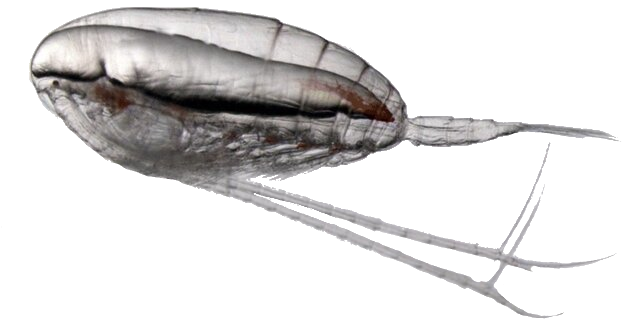

Calanus Biomass Viewer
Select a region to explore biomass climatology figures.
CINAR Polygons
8 regions in the Gulf of Maine and Scotian Shelf
EcoMon Strata
33 NOAA EcoMon survey strata
CPO Project
Stellwagen Bank NMS and surrounding strata